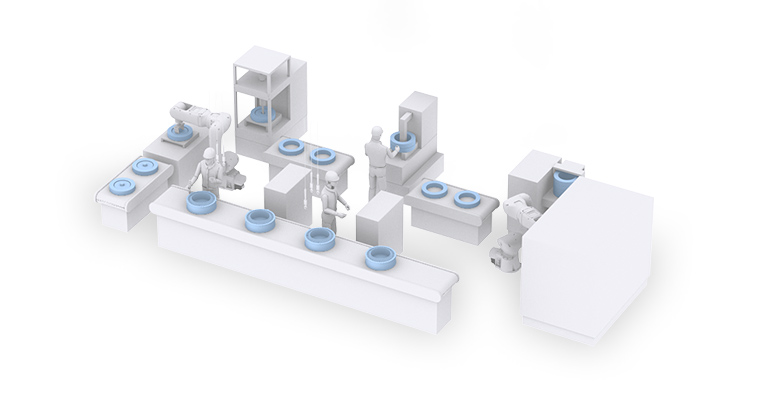
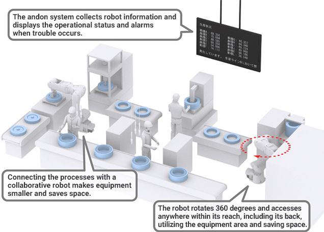
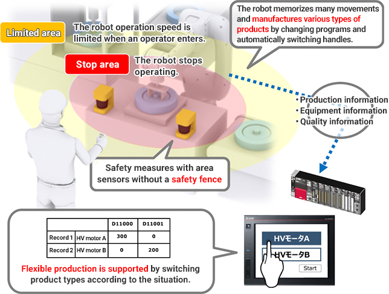
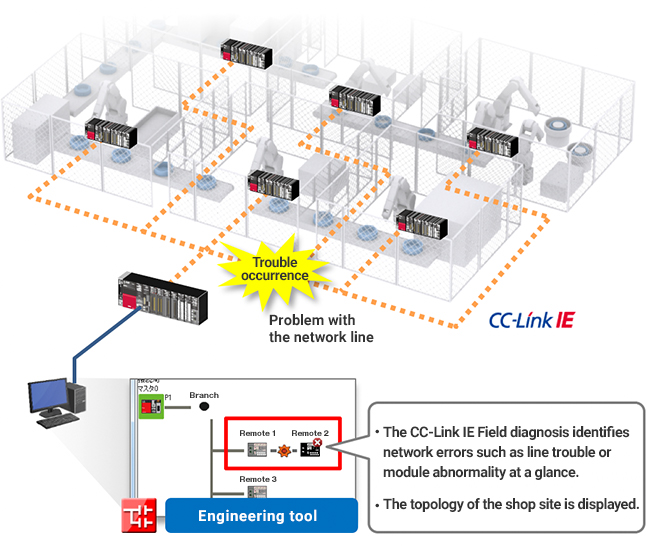
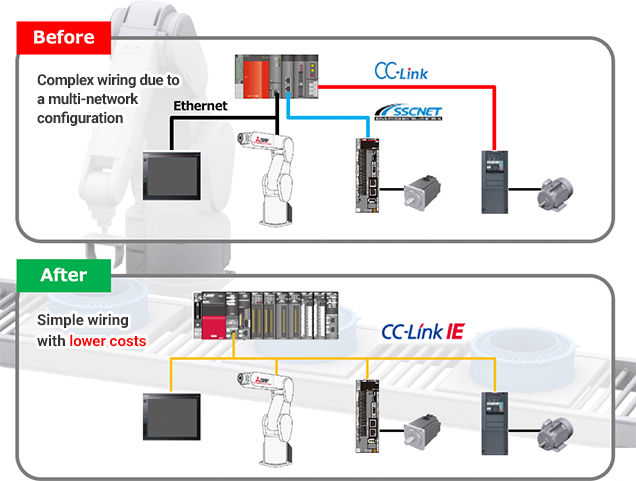
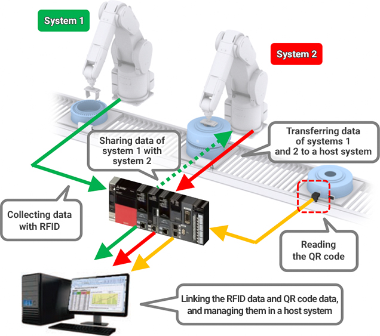
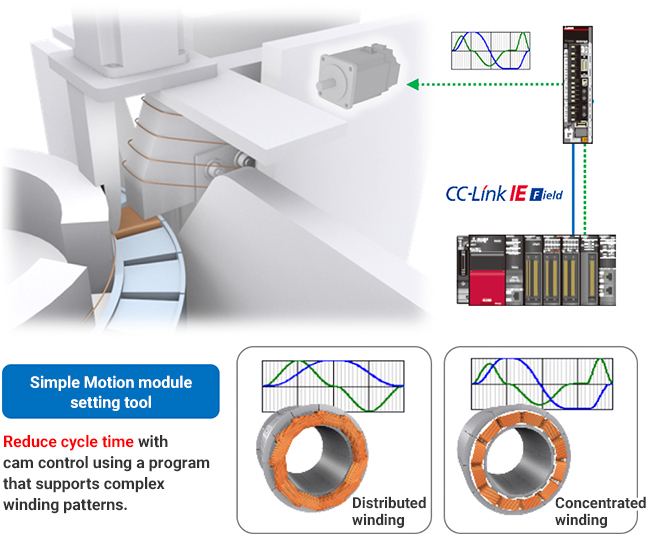

Solutions
Automotive Manufacturing

HV Motor Assembly
- Reducing equipment size and visualizing trouble
- Configuring a production line that manufactures products flexibly according to the production status and that does not require a safety fence
- Reducing downtime by early error detection with visualization of the production line
- Reducing wiring in the control panel with the most suitable connection configuration
- Sharing workpiece information among systems and managing it in a host system
- Reducing cycle time for motor windings

Solutions to the Issues
| Issues | Solutions |
|---|---|
| Reducing equipment size and visualizing trouble | Combine processes with the collaborative robot, MEFA, and collect interlock signals in an andon system. |
| Configuring a production line that manufactures products flexibly according to the production status and that does not require a safety fence | Cooperate with FA products and support human collaboration using area sensors. |
| Reducing downtime by early error detection with visualization of the production line | Visualize the entire network with CC-Link IE. |
| Reducing wiring in the control panel with the most suitable connection configuration | Integrate into CC-Link IE TSN/CC-Link IE Field. |
| Sharing workpiece information among systems and managing it in a host system | Link RFID and the code reader information. |
| Reducing cycle time for motor windings | Support complex winding patterns with cam control and switch the cam patterns according to windings. |
Issues
Reducing equipment size and visualizing trouble
Solutions
Reduce equipment size by combining processes with the collaborative robot, MELFA. Visualize trouble by collecting interlock signals in an andon system.
- Using intelligent technology, automate the operational processes that humans previously handled because of the high degree of difficulty.
Point
- Safety functions allow robots and humans to work together, easily enabling safe automation and space-saving.

Product Lineup
Issues
Configuring a production line that manufactures products flexibly according to the production status and that does not require a safety fence
Solutions
Manufacture products according to the production status by collecting information on systems and cooperating with FA products. Configure a production line that human collaboration support with area sensors enables a safe approach to the operation area without a fence and without stopping the robots.
- Connect and cooperate with various FA products, such as the MELSEC iQ-series. Comply with e-F@ctory and seamlessly integrate IT systems and robots.
- Ensure safety with a robot that does not approach the cooperative work area where operators work.
Point
- Manufacture according to the production status with seamless device collaboration and improve productivity and maintainability.
- Human collaboration support with safety options enables humans and robots to share work areas.

Product Lineup


Issues
Reducing downtime by early error detection with visualization of the production line
Solutions
Visualize the entire network with CC-Link IE.Reduce downtime by detecting failure areas early with a network diagnosis function.
- Reduce downtime by visibly displaying the entire network and detecting the failure area quickly with the CC-Link IE Field diagnosis.
- Check duplicate station numbers and wiring errors by monitoring wiring changes in real time.
Point
- Analyze trouble factors by checking events on the network and module communication status.
- Monitor PLCs of other stations via the network.

Product Lineup

Issues
Reducing wiring in the control panel with the most suitable connection configuration
Solutions
Reduce equipment wiring by integrating systems that were previously configured by multiple networks into CC-Link IE TSN/CC-Link IE Field.
- Increase system configuration flexibility and reduce wiring costs by building an optimal network that connects PLCs, servo amplifiers, and inverters on a single network suitable for an application.
- Integrate distributed control, I/O control, and motion control while having information communication with IT systems mixed.
Point
- Configure a flexible system with various devices.
- Build flexible wiring according to the system layout.

Product Lineup

Issues
Sharing workpiece information among systems and managing it in a host system
Solutions
Share workpiece information among systems by reading and writing data with RFID. In addition, manage the information in a host system by reading the QR code with a code reader and linking individual information and RFID data.
- Increase traceability with RFID that allows all production line processes to be traced and various information to be read and saved.
- Use the code reader reading results and recognition images for traceability by sending the data to a host system.
Point
- Data can be transferred among systems by attaching RFID readers (antennas) to conveyor belts and various parts of the system, and RFID tags to the pallets that carry the system.
- Read QR codes printed on metal surfaces or complex shapes by adjusting contrast. The wide visual field enables batch reading of multiple codes and stable reading of codes on varying positions and heights.

Product Lineup
Issues
Reducing cycle time for motor windings
Solutions
Reduce cycle time by supporting complex winding patterns with cam control and switching the cam patterns according to windings when manufacturing motor coils with a winding machine.
- Control an output axis in cam control with cam data created according to the motion.
Point
- The following cam operations are available according to the application: linear, two-way, and feed operations.
- Display the status of the servo amplifier in operation and input/output signals, and power consumption on GOT for checking.
